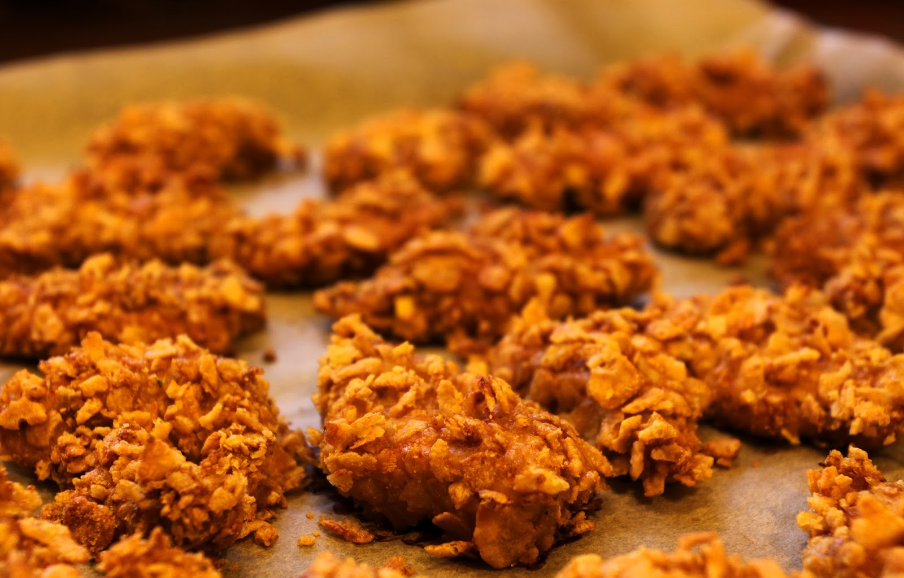

maseczki przeciwzmarszczkowe - 4 proste przepisy na poprawę cery
 Menu Zdrowie Wszystkie Zdrowie Anatomia i fizjologia Choroby Ciało ludzkie Kuracje i leczenie Lekarstwa Naturalne remedia Wszystkie Naturalne remedia Dbanie o ciało Dbanie o włosy Inne formy leczenia Naturalne kuracje Naturopatia Pielęgnacja twarzy Rośliny lecznicze Dobre samopoczucie Wszystkie Dobre samopoczucie Ćwiczenia i sport Uroda i Pielęgnacja Zdrowy styl życia Zdrowy umysł Dieta Wszystkie Dieta Dieta śródziemnomorska Diety detox Odżywianie Schudnij Zdrowa dieta Żywność ekologiczna i transgeniczna Przepisy Wszystkie Przepisy Dania wegetariańskie i wegańskie Desery Napary Przystawki i dania główne Soki i koktajle Zdrowe przepisy Żywność bezglutenowa Macierzyństwo Wszystkie Macierzyństwo Ciąża Dzieci Para Wszystkie Para Konflikty Seks Zdrowie i życie seksualne Zerwanie i rozwód Związki Styl życia Wszystkie Styl życia Ciekawostki Dekoracja Ogród i przestrzeń zewnętrzna Recykling Wskazówki dla domu Kim jesteśmy • Polityka Cookies • Zasady i warunki użytkowania • Polityka Prywatności Zdrowie Anatomia i fizjologia Choroby Ciało ludzkie Kuracje i leczenie Lekarstwa Naturalne remedia Dbanie o ciało Dbanie o włosy Inne formy leczenia Naturalne kuracje Naturopatia Pielęgnacja twarzy Rośliny lecznicze Dobre samopoczucie Ćwiczenia i sport Uroda i Pielęgnacja Zdrowy styl życia Zdrowy umysł Dieta Dieta śródziemnomorska Diety detox Odżywianie Schudnij Zdrowa dieta Żywność ekologiczna i transgeniczna Przepisy Dania wegetariańskie i wegańskie Desery Napary Przystawki i dania główne Soki i koktajle Zdrowe przepisy Żywność bezglutenowa Macierzyństwo Ciąża Dzieci Para Konflikty Seks Zdrowie i życie seksualne Zerwanie i rozwód Związki Styl życia Ciekawostki Dekoracja Ogród i przestrzeń zewnętrzna Recykling Wskazówki dla domu Home » Naturalne remedia » Pielęgnacja twarzy
Menu Zdrowie Wszystkie Zdrowie Anatomia i fizjologia Choroby Ciało ludzkie Kuracje i leczenie Lekarstwa Naturalne remedia Wszystkie Naturalne remedia Dbanie o ciało Dbanie o włosy Inne formy leczenia Naturalne kuracje Naturopatia Pielęgnacja twarzy Rośliny lecznicze Dobre samopoczucie Wszystkie Dobre samopoczucie Ćwiczenia i sport Uroda i Pielęgnacja Zdrowy styl życia Zdrowy umysł Dieta Wszystkie Dieta Dieta śródziemnomorska Diety detox Odżywianie Schudnij Zdrowa dieta Żywność ekologiczna i transgeniczna Przepisy Wszystkie Przepisy Dania wegetariańskie i wegańskie Desery Napary Przystawki i dania główne Soki i koktajle Zdrowe przepisy Żywność bezglutenowa Macierzyństwo Wszystkie Macierzyństwo Ciąża Dzieci Para Wszystkie Para Konflikty Seks Zdrowie i życie seksualne Zerwanie i rozwód Związki Styl życia Wszystkie Styl życia Ciekawostki Dekoracja Ogród i przestrzeń zewnętrzna Recykling Wskazówki dla domu Kim jesteśmy • Polityka Cookies • Zasady i warunki użytkowania • Polityka Prywatności Zdrowie Anatomia i fizjologia Choroby Ciało ludzkie Kuracje i leczenie Lekarstwa Naturalne remedia Dbanie o ciało Dbanie o włosy Inne formy leczenia Naturalne kuracje Naturopatia Pielęgnacja twarzy Rośliny lecznicze Dobre samopoczucie Ćwiczenia i sport Uroda i Pielęgnacja Zdrowy styl życia Zdrowy umysł Dieta Dieta śródziemnomorska Diety detox Odżywianie Schudnij Zdrowa dieta Żywność ekologiczna i transgeniczna Przepisy Dania wegetariańskie i wegańskie Desery Napary Przystawki i dania główne Soki i koktajle Zdrowe przepisy Żywność bezglutenowa Macierzyństwo Ciąża Dzieci Para Konflikty Seks Zdrowie i życie seksualne Zerwanie i rozwód Związki Styl życia Ciekawostki Dekoracja Ogród i przestrzeń zewnętrzna Recykling Wskazówki dla domu Home » Naturalne remedia » Pielęgnacja twarzy
Maseczki przeciwzmarszczkowe - 4 proste przepisy na poprawę cery
01 Maj, 2019 Poznaj przepisy na proste i tanie maseczki przeciwzmarszczkowe Jak używać kurkumy do leczenia trądziku? Leczenie trądziku – najlepsze metody do wypróbowania Domowa maseczka oczyszczająca pory – jak ją wykonać?Czy wiedziałeś, że istnieją maseczki przeciwzmarszczkowe ? Zmarszczki to wgłębienia tworzące się na naszej skórze wskutek wyrażania emocji. Są one konsekwencją starzenia się skóry. Ich przyczyną może być jednak również nieprawidłowa pielęgnacja (nadmierna ekspozycja na promieniowanie UV, odwodnienie, złe odżywianie itp.)
Te brzydkie ślady na twarzy, pojawiające się najczęściej w kącikach oczu, są postrzegane jako nieatrakcyjne, co jest źródłem kompleksów dla wielu osób. Aby zapobiec powstawaniu zmarszczek i zmniejszyć ich widoczność, należy przede wszystkim stymulować produkcję kolagenu i elastyny. Możesz to zrobić poprzez odpowiednie pożywienie, suplementy diety i maseczki przeciwzmarszczkowe .
Poniższe domowe maseczki przeciwzmarszczkowe mają za zadanie spłycenie istniejących zmarszczek i nawilżenie skóry . Pozwolą Ci również zrobić dla siebie coś miłego i poczuć się atrakcyjnie.
Wypróbuj je!
4 proste maseczki przeciwzmarszczkowe
1. Białka jaj
Białka jaj stosowane są w celu zmiękczania naskórka, zmniejszenia oznak starzenia i naprawy uszkodzonej skóry. Działają ściągająco i złuszczająco, ujędrniając tym samym wiotką skórę i zmniejszając stany zapalne. Białka działają również ściągająco na pory.
Dzięki maseczce z białka jaja kurzego, na którą przepis znajdziesz poniżej, pozbędziesz się drobnych zmarszczek mimicznych oraz spłycisz kurze łapki. Do maseczki możesz dodać odrobinę miodu. Połączenie właściwości obu tych składników pomoże Ci rozjaśnić przebarwienia.
Składniki
1 jajko (63 g) 1 łyżka miodu (21 g)Przygotowanie
Umyj twarz wodą z mydłem. Oddziel żółtko i wymieszaj białko z łyżką miodu.Zastosowanie
Równomiernie rozprowadź maskę na twarzy, ze szczególnym uwzględnieniem kącików oczu i najbardziej problematycznych obszarów. Pozostaw maseczkę na 20 minut, a następnie zmyj ciepłą wodą. Możesz stosować maseczki przeciwzmarszczkowe na bazie białka dwa razy w tygodniu, aby uzyskać jak najlepsze wyniki.Polecamy również artykuł: Maseczka oczyszczająca i ściągająca z jajka
2. Mleko i owies
Mieszanie mleka i owsa to świetny sposób na utrzymanie nawilżonej, gładkiej i promiennej skóry . Nie ma znaczenia, jaki masz rodzaj cery, połączenie mleka i owsa sprawdzi się w każdym przypadku. Ta maska nie tylko działa przeciwzmarszczkowo, ale również dogłębnie oczyszcza cerę i usuwa martwy naskórek .
Owies zawiera substancje, które mają moc zwalczania wolnych rodników. Z kolei mleko nawilża, złuszcza i oczyszcza, jednocześnie stymulując produkcję kolagenu.
Składniki
2 łyżki mąki owsianej (20 g) 1/2 szklanki mleka (100 ml)Przygotowanie
Podgrzej mleko, aż się zagotuje. Po ugotowaniu dodaj mąkę owsianą. Zdejmij z ognia i odstaw do ostygnięcia.Zastosowanie
Umyj twarz zimną wodą. Nałóż maskę na szyję, linię szczęki i twarz. Czystymi dłońmi wykonaj delikatny masaż twarzy, aby złuszczyć martwy naskórek. Pozostaw maskę na 20 minut, a następnie spłucz ciepłą wodą. Aby uzyskać jak najlepsze efekty, stosuj tę maskę 3 razy w tygodniu,3. Banan i awokado
Banany są doskonałe dla skóry, ponieważ zawierają witaminę C i witaminę B6 . Te witaminy pomagają utrzymać elastyczność skóry. Ponadto działają jak przeciwutleniacze, pomagają zwalczać wolne rodniki, a także nawilżają i naprawiają uszkodzenia naskórka spowodowane przez słońce.
Awokado jest bogate w kwasy tłuszczowe omega-3 . Zawiera witaminy A, C i E i jest wykorzystywany w przemyśle kosmetycznym, aby zmniejszyć pojawianie się zmarszczek, blizn i innych niedoskonałości. Awokado pomaga również zmniejszyć łuszczenie się skóry i utrzymać promienną skórę.
Składniki
1 małe awokado (200 g) 1 banan (100 g)Przygotowanie
Rozdrobnij miąższ awokado w misce widelcem. Dodaj rozgniecionego banana i mieszaj aż do uzyskania pasty o jednolitej konsystencji.Zastosowanie
Umyj dokładnie twarz. Nałóż maskę na twarz, szyję i linię żuchwy i pozostaw na 30 minut. Spłucz ją ciepłą wodą. Powtarzaj ten zabieg 2 do 3 razy w tygodniu, aby zapobiec (lub zmniejszyć) zmarszczkom.Sprawdź również: Niedoskonałości skórne – 5 naturalnych maseczek
4. Aloes i ogórek
Aloes dostarcza skórze niezbędnych aminokwasów, które zapewniają jej nawilżenie i gładkość . Jest to doskonały składnik, który głęboko wnika w skórę i zapobiega przesuszeniom, a także pojawianiu się oznak starzenia.
Aloes ma silne właściwości przeciwstarzeniowe, stymuluje produkcję kolagenu i tym samym poprawia elastyczność skóry, jednocześnie utrzymując zdrową i nawilżoną cerę.
Ogórek również nawilża skórę. Zawiera dużo wody, a także witaminy i minerały, dzięki którym zmniejsza zmarszczki mimiczne i regeneruje uszkodzenia naskórka.
Składniki
Żel aloesowy (100 g) 1 ogórekPrzygotowanie
Zmieszaj żel aloesowy z ogórkiem i dodaj odrobinę wody, żeby maseczka miała gładszą konsystencję. Przełóż powstałą maseczkę do miski.Zastosowanie
Nałóż maseczkę na twarz i pozostaw na całą noc. Rano umyj twarz ciepłą wodą. Powtarzaj ten zabieg raz w tygodniu, a zapomnisz o zmarszczkach! Złuszczające produkty dla każdego rodzaju skóry twarzy Złuszczające produkty można podzielić na peelingi mechaniczne oraz chemiczne. Dostosuj swój wybór do rodzaju skóry twarzy. Przeczytaj więcej » Bibliografia Danby FW. (2010). Nutrition and aging skin: sugar and glycation. Clin Dermatol. Fulton James E., Gaminchi F. (1999). Sleep Lines. Dermatol Surg. Link copied! INTERESUJĄCE ARTYKUŁY Pielęgnacja twarzy Jak używać kurkumy do leczenia trądziku?Czy wiedziałaś, że możesz używać kurkumy do leczenia trądziku? Czytaj dalej, aby dowiedzieć się więcej na ten temat. Kurkuma jest…
Pielęgnacja twarzy Leczenie trądziku – najlepsze metody do wypróbowaniaNa szczęście obecnie leczenie trądziku jest znacznie łatwiejsze i istnieje wiele skutecznych metod. Trądzik jest powodem aż 25% wizyt u…
Pielęgnacja twarzy Domowa maseczka oczyszczająca pory – jak ją wykonać?Domowa maseczka oczyszczająca pory jest idealnym rozwiązaniem, jeśli chcesz pozbyć się zaskórników w naturalny sposób. Ta domowa maseczka oczyszczająca pory…
Pielęgnacja twarzy Zdrowa skóra – poznaj 6 naturalnych sprzymierzeńców.Zdrowa skóra oznacza zdrowe ciało i jest świadectwem prawidłowo funkcjonującego organizmu. Jeśli pragniesz pięknej, świecącej i promiennej cery, powinieneś zastosować…
Pielęgnacja twarzy Najlepsze maseczki dla Twojej twarzyJeśli chcesz, aby Twoja twarz wyglądała pięknie każdego dnia, maski są świetną pomocą w przeciwdziałaniu skutkom trądziku lub wyprysków, a…
Pielęgnacja twarzy Skóra wokół oczu – 6 sposobów, jak o nią dbaćNie musisz kupować drogich kremów przeciwzmarszczkowych, aby Twoja skóra wokół oczu była zadbana. Chociaż nie możemy zaprzeczyć, że wiele ich…
Ciekawe artykuły Choroby Wrzód miękki: objawy i leczenieWrzód miękki to choroba zakaźna wywoływana przez bakterie. Główne sposoby ochrony przed jego rozwojem to używanie prezerwatyw i zmniejszenie liczby…
Anatomia i fizjologia Na czym polega technika autopsji neuropatologicznej?Technika autopsji neuropatologicznej składa się z dwóch głównych faz. Pierwsza z nich to autopsja czaszki, zaś druga to autopsja kręgowa.…
Desery Jak zrobić ciasto gruszkowe bez cukru?Ciasto gruszkowe bez cukru to pyszny, niedrogi i bardzo prosty w wykonaniu deser. Ponadto jest to doskonała alternatywa dla dzieci,…
Choroby Celiakia lub nietolerancja glutenu - wszystko, co należy wiedzieć na ten tematCeliakia lub inaczej nietolerancja glutenu to przewlekła nadwrażliwość na białko w niektórych produktach spożywczych, takich jak zboża. Eksperci szacują, że…
Kim jesteśmy Polityka Cookies Zasady i warunki użytkowania Polityka Prywatności© 2020 Krok do Zdrowia | Blog poświęcony zdrowemu stylowi życia.
International: Français | Suomi | Dansk | Deutsch | Română | Nederlands | العربية | Ελληνικά | Español | Português | 日本語 | Українська | Türkçe | Svenska | 한국어 | Русский | 繁體中文 | English | हिन्दी | Norsk bokmål | Italiano | Български
Zawartość niniejszej strony jest publikowana jedynie w celach informacyjnych. W żadnym wypadku treści strony nie można traktować jako alternatywy dla pracy profesjonalisty. Z tego powodu zalecamy Ci abyś w razie potrzeby skontaktował się ze specjalistą.
Ostatnia aktualizacja: 03 Wrzesień, 2020
